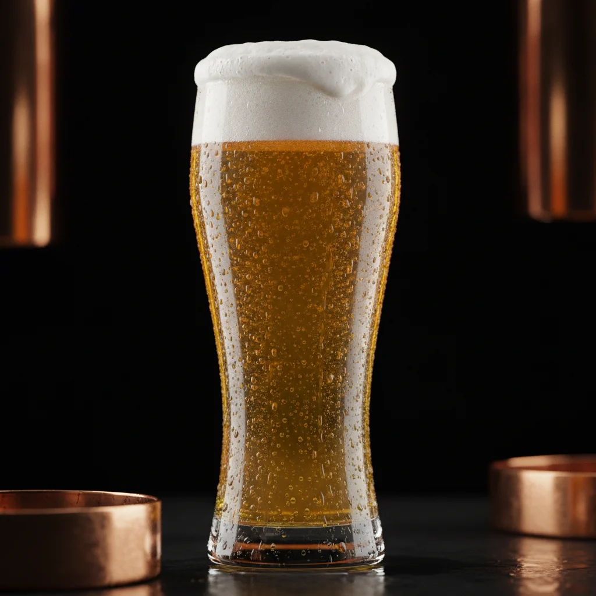
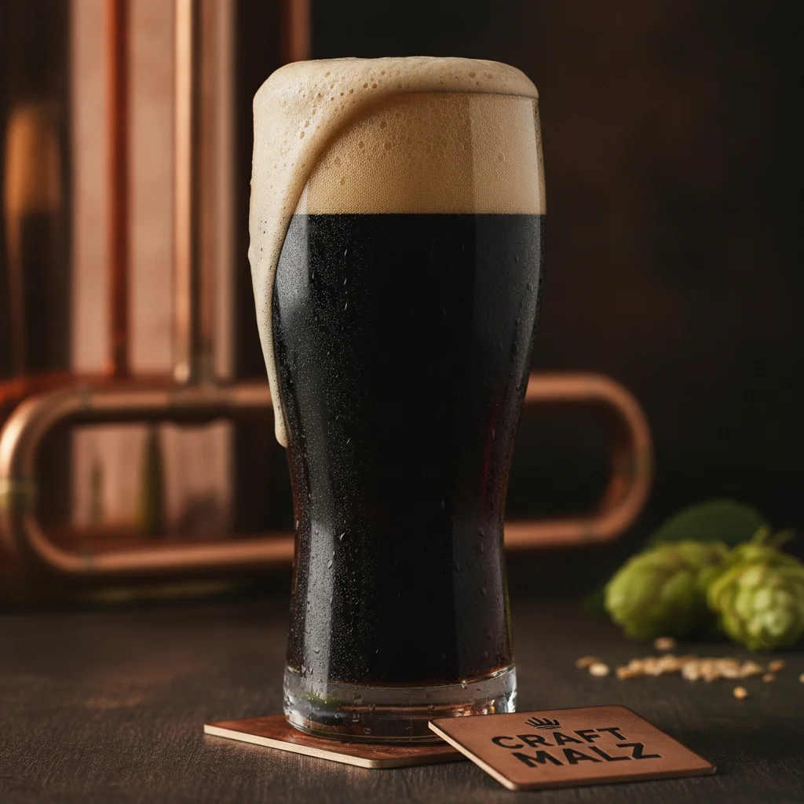
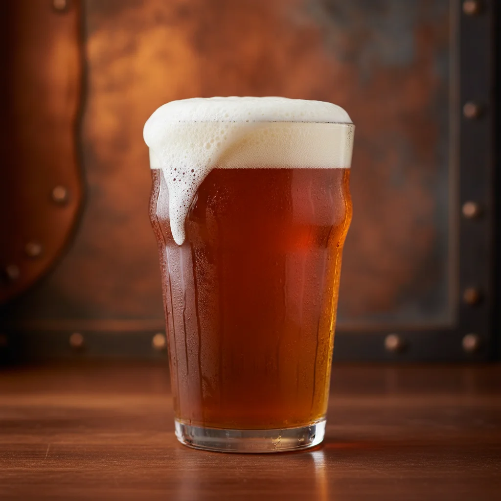
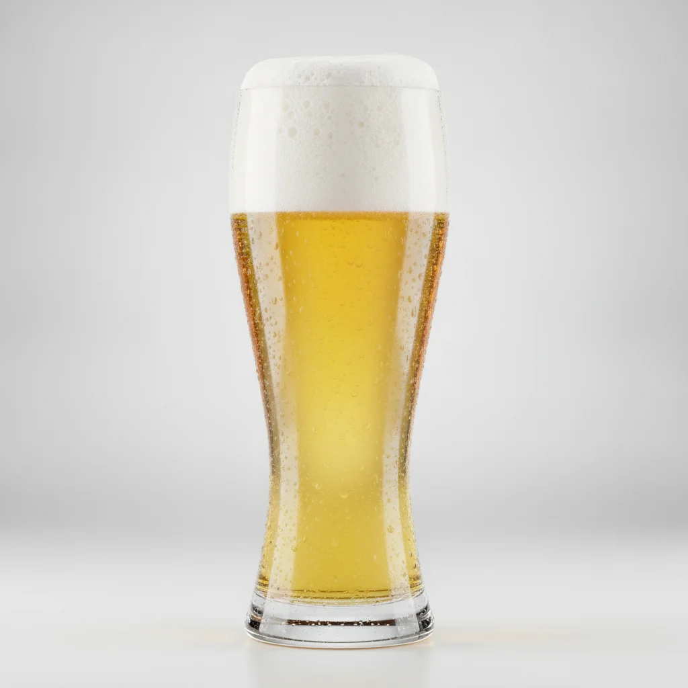

Nossa História
Tradição que se traduz em cada gole.
Cerveja de produção artesanal, de alta qualidade, que mata sua sede. Na Cervejaria Brugge, honramos as receitas clássicas europeias para entregar uma experiência incomparável no seu copo. Cada lote é uma celebração ao tempo, aos ingredientes puros e à paciência necessária para alcançar a perfeição.
18+
Anos de tradição
4
Estilos clássicos
Nossos Rótulos
Pilsen
4.5% ABV | 12 IBULeve, dourada e extremamente refrescante

Ficha Técnica
COR / SRM
Dourado / 4 SRM
AMARGOR
12 IBU
MALTES
Pilsner, Munich
LÚPULOS
Saaz, Hallertau
HARMONIZAÇÃO
Peixes e saladas
TEMP
2-4°C
Malzbier
4.0% ABV | 15 IBUEncorpada e ligeramente adocicada

Ficha Técnica
COR / SRM
Escuro / 35 SRM
AMARGOR
15 IBU
MALTES
Caramelho, Tostado
LÚPULOS
Magnum
HARMONIZAÇÃO
Doces e Chocolates
TEMP
4-6°C
IPA
6.5% ABV | 55 IBUAmargor potente, aroma cítrico e floral.

Ficha Técnica
COR / SRM
Âmbar / 12 SRM
AMARGOR
55 IBU
MALTES
Pale ale, Crystal
LÚPULOS
Citra, Mosaic
HARMONIZAÇÃO
Comidas picantes e Carnes
TEMP
7-10°C
Weisse
5.0% ABV | 10 IBUCerveja clássica de trigo. Aromas frutados.

Ficha Técnica
COR / SRM
Palha / 3 SRM
AMARGOR
10 IBU
MALTES
Trigo, Pilsner
LÚPULOS
Tettnanger
HARMONIZAÇÃO
Queijos leves e Frutas
TEMP
4-6°C